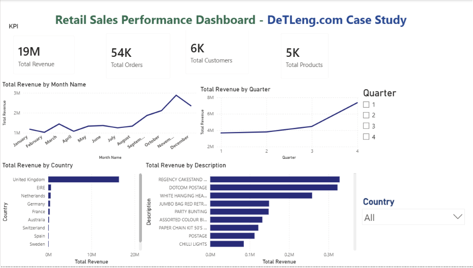
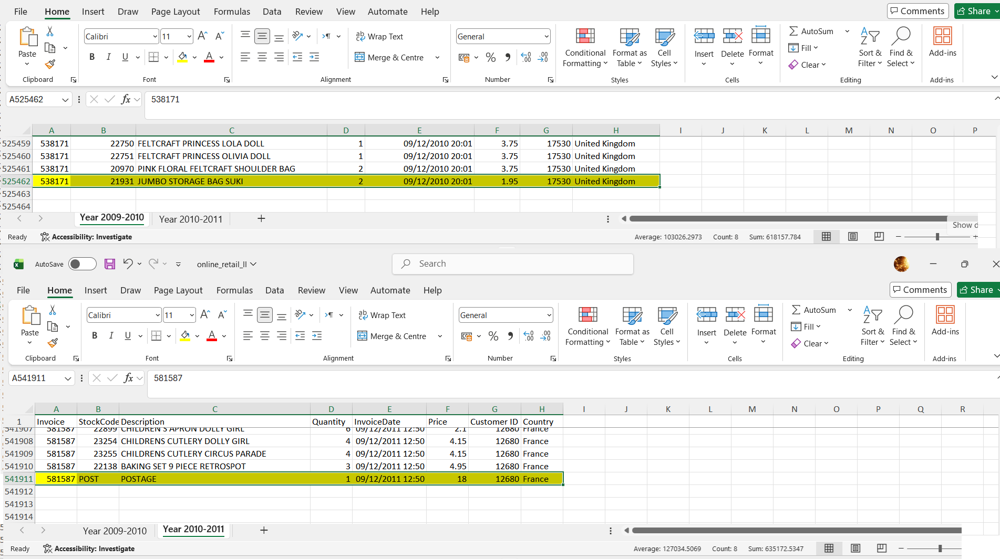
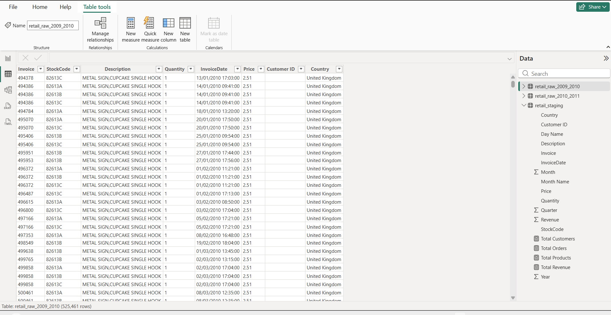
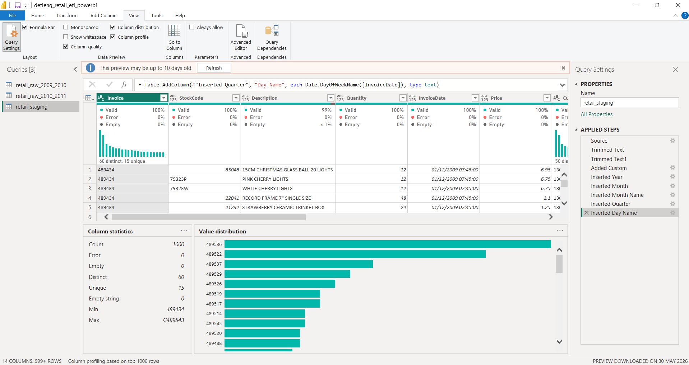
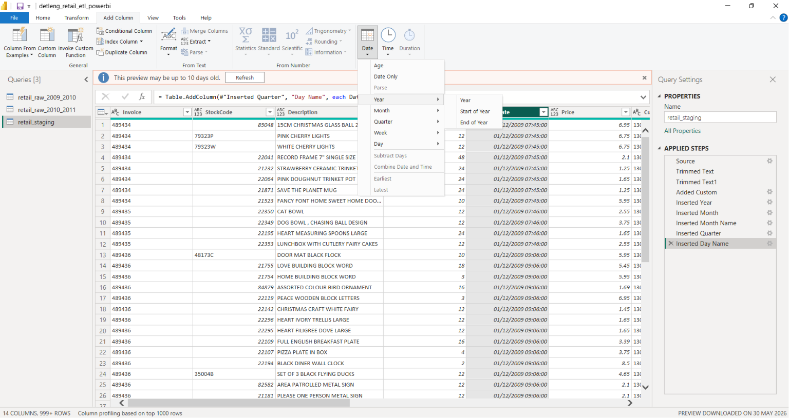
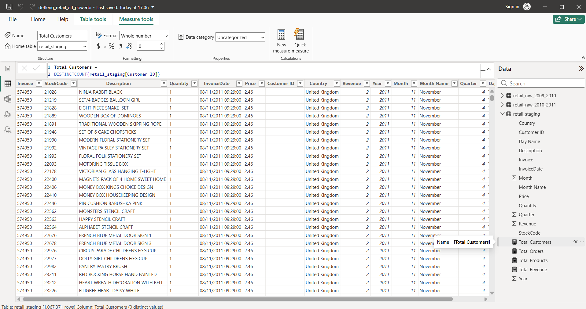
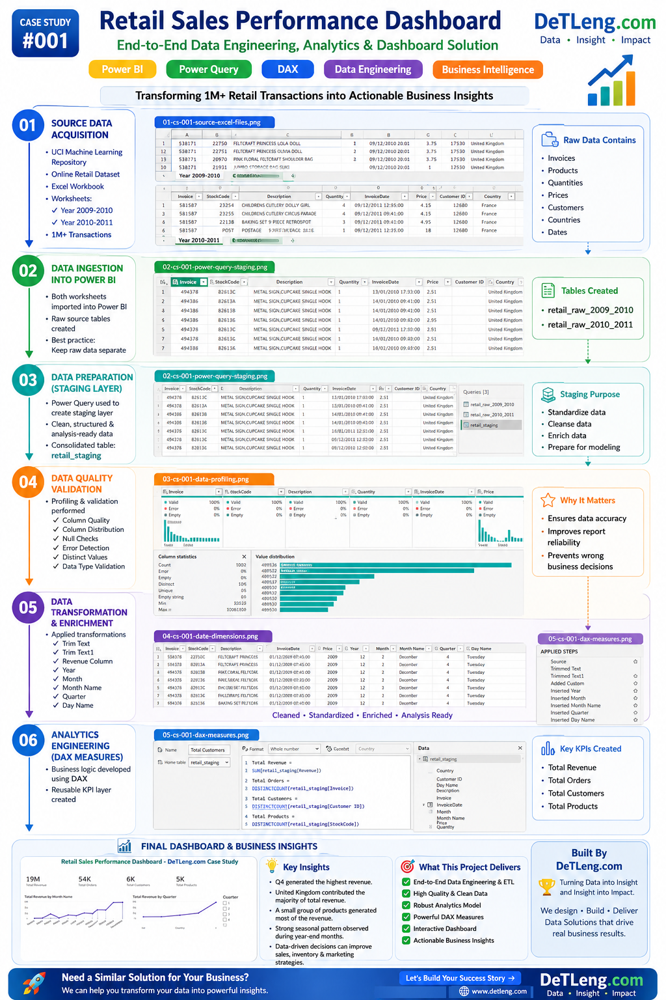

Data Engineering ✦ ETL Pipelines ✦ Power BI Dashboards ✦ BigQuery Analytics
End-to-end Business Intelligence solution developed by DeTLeng to transform large-scale retail transaction data into actionable business insights using Power BI, Power Query, and DAX.
This case study demonstrates the complete project lifecycle including business understanding, data engineering, ETL processing, analytics engineering, dashboard development, and executive reporting.
The dashboard below represents the final reporting solution delivered after completing the full data engineering and analytics workflow documented in this case study.

This case study demonstrates the complete lifecycle of a modern Business Intelligence project, from raw source data through transformation, modeling, analytical calculations, and dashboard development.
Project source files, PBIX artifacts, and implementation assets are not publicly distributed.
Organizations seeking a similar solution can request a complimentary consultation session where project architecture, development methodology, reporting approach, and implementation strategy can be demonstrated through live screen sharing.
Whether the requirement involves Power BI, ETL pipelines, SQL development, BigQuery analytics, or executive reporting, the same end-to-end methodology can be applied to transform business data into meaningful and actionable insights.
Retail organizations generate thousands of transactions every day. Without a centralized reporting solution, decision-makers often struggle to identify revenue trends, customer behavior patterns, product performance, and seasonal sales fluctuations.
The primary objective of this project was to develop an executive-level Retail Sales Performance Dashboard capable of transforming raw transactional data into meaningful business insights.
The solution was designed to:
This case study utilizes the publicly available Online Retail Dataset from the UCI Machine Learning Repository.
The dataset contains real-world retail transaction records collected from an online retail business operating between 2009 and 2011.
The original workbook was imported into Power BI and used as the source system for all subsequent ETL, modeling, and dashboard development activities.
The expected outcome of this project was to establish a complete Business Intelligence workflow capable of transforming raw retail transaction data into actionable executive reporting.
The final solution was expected to provide:
Beyond visualization, the project aimed to demonstrate the complete lifecycle of a modern analytics solution including data ingestion, transformation, modeling, DAX calculations, and dashboard development.
A successful Business Intelligence solution begins long before dashboard development. The majority of project effort is typically invested in data preparation, data quality validation, transformation, and modeling.
For this case study, Power BI and Power Query were used to transform raw retail transaction data into a clean analytical dataset suitable for reporting and decision-making.
The project started with the Online Retail Dataset obtained from the UCI Machine Learning Repository.
The source workbook contained two separate worksheets covering different reporting periods:
Combined, these worksheets contained more than one million retail transaction records, including invoices, products, quantities, pricing information, customer identifiers, and country-level sales information.
The objective was to consolidate these datasets into a single analytical model capable of supporting executive reporting and business analysis.

Figure 1: Original source workbook containing retail transaction data for two reporting periods.
The Excel workbook was imported into Power BI Desktop. Each worksheet was loaded as an independent source table to preserve the original structure of the raw data.
Two raw ingestion tables were created:
Maintaining raw tables separately during ingestion is considered a best practice, as it allows validation against source data throughout the development lifecycle.

Figure 2: Raw source tables imported into Power BI for initial processing.
To prepare the data for reporting, a dedicated staging layer was created using Power Query.
The staging layer serves as an intermediate transformation area where data is cleaned, standardized, and enriched before being exposed to the reporting model.
A consolidated table named:
was created to serve as the primary analytical dataset.
Figure 3: Power Query staging layer used for data preparation and transformation.
Before performing transformations, a detailed data quality review was conducted. Power Query profiling tools were enabled to evaluate dataset health and identify potential data quality issues.
The following validation checks were performed:
This step is critical because inaccurate source data can produce misleading business insights. Data profiling ensures that reporting logic is built on trusted and validated information.

Figure 4: Power Query profiling tools showing column quality, distribution, and statistical summaries.
After validating data quality, transformation logic was applied to prepare the dataset for analytical reporting.
The following transformations were implemented:
These derived attributes significantly improve reporting flexibility and enable time-based analysis without requiring complex calculations within visualizations.

Figure 5: Date intelligence attributes generated from transactional invoice dates.
Power Query automatically tracked all applied transformation steps, ensuring transparency, repeatability, and maintainability of the ETL process.
At the completion of the ETL process, the dataset was fully prepared for analytical modeling, DAX development, and dashboard creation.
Once the data preparation phase was completed, the project moved into the Analytics Engineering layer.
This stage focused on converting clean transactional data into meaningful business metrics that could support operational reporting and executive decision-making.
Rather than exposing raw records directly to stakeholders, reusable DAX measures were developed to create a centralized KPI layer for the dashboard. This approach improves consistency, scalability, and reporting accuracy.
The dashboard was designed around four primary executive KPIs that provide a high-level view of overall business performance.
These measures became the foundation for all visualizations, trend analysis, and business insights presented throughout the reporting solution.
Revenue serves as the primary performance indicator for the business. A dedicated DAX measure was created to aggregate transactional sales values across the entire dataset.
Total Revenue = SUM(retail_staging[Revenue])
This measure powers:
To understand overall business activity, the number of unique customer orders was calculated.
Total Orders = DISTINCTCOUNT(retail_staging[Invoice])
This metric represents completed business transactions rather than individual line items, providing a more accurate view of order volume.
Customer measurement is critical for evaluating market reach and customer engagement.
A distinct customer count measure was created to eliminate duplicate purchases and accurately represent active customers.
Total Customers = DISTINCTCOUNT(retail_staging[Customer ID])
This KPI helps stakeholders understand customer participation and overall business penetration.
Product diversity was measured using unique stock codes across all transactions.
Total Products = DISTINCTCOUNT(retail_staging[StockCode])
This measure provides visibility into catalog breadth and product activity within the reporting period.
The DAX layer was intentionally designed to separate business calculations from visual components.
By centralizing logic within reusable measures, the dashboard remains:
This approach follows modern Business Intelligence development practices and ensures future enhancements can be implemented without redesigning existing reports.

Figure 6: KPI measures and analytical business logic developed using DAX within Power BI.
At the completion of this phase, the project had a fully developed analytical foundation capable of supporting interactive reporting, trend analysis, performance monitoring, and executive-level decision support.
The resulting KPI framework became the core engine powering all dashboard visualizations and business insights presented in the final reporting solution.
Following data preparation, transformation, and analytics engineering, the final stage of the project focused on delivering an executive-ready reporting solution.
The objective was not simply to visualize data, but to create a dashboard capable of supporting business monitoring, performance evaluation, and data-driven decision-making.
All visualizations were developed within Power BI using the analytical model and DAX measures created during previous stages of the project.
The final reporting solution consolidates key business metrics into a single interactive dashboard that enables stakeholders to monitor sales performance, customer activity, and product trends.
Figure 7: Final Retail Sales Performance Dashboard developed in Power BI.
To provide immediate visibility into overall business performance, executive KPI cards were implemented at the top of the dashboard.
These KPIs provide an instant snapshot of business health without requiring users to explore detailed reports.
A monthly revenue trend visualization was created to identify growth patterns, seasonal behavior, and sales fluctuations throughout the year.
This analysis allows stakeholders to quickly identify periods of strong performance and potential revenue decline.
Quarter-level reporting was implemented to provide a higher-level business perspective and support strategic planning.
Quarterly analysis simplifies trend interpretation and highlights broader business performance patterns.
Geographical performance reporting was developed to identify regional revenue contribution and market concentration.
This analysis enables decision-makers to evaluate market performance and identify high-value customer regions.
Product-level analysis was introduced to identify revenue-generating items and support inventory planning.
The resulting visualization highlights products that contribute the greatest share of overall revenue.
To improve usability and exploration capabilities, interactive slicers were incorporated into the dashboard.
These controls allow stakeholders to perform self-service analysis without modifying the underlying report.
Analysis of the dataset revealed several notable findings:
These insights demonstrate how structured reporting can transform transactional data into actionable business intelligence.
The project successfully delivered a complete Business Intelligence solution covering:
The resulting solution provides a scalable foundation for performance monitoring, operational reporting, and executive decision support.
The infographic below provides a visual summary of the complete Business Intelligence delivery lifecycle implemented for this project.
It illustrates how raw retail transaction data was transformed into an executive reporting solution through Data Engineering, ETL processing, Analytics Engineering, DAX development, dashboard design, and business insight generation.
This visual workflow represents the structured methodology used by DeTLeng to deliver modern Business Intelligence and Analytics solutions.

Project Lifecycle Covered:
Business Story → Data Engineering → Data Preparation → Data Quality Validation →
Analytics Engineering → Dashboard Development → Business Insights → Solution Delivery